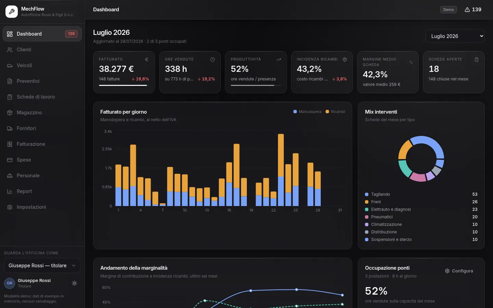
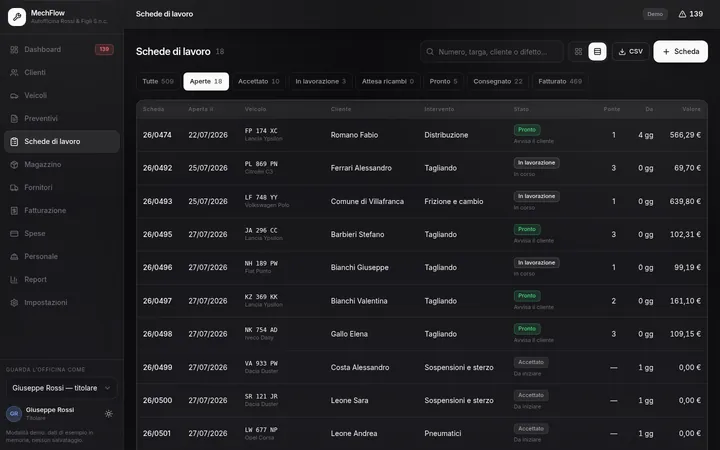
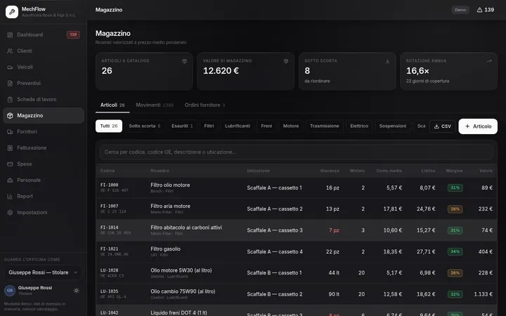
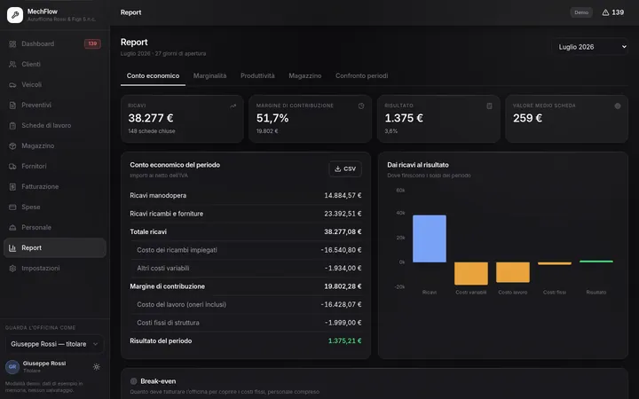

Per officine che stanno in un capannone
Il gestionale dell’officina,
dal preventivo alla fattura.
Un titolare, qualche meccanico, tre ponti, un tablet appeso al muro: MechFlow è pensato per questo. Copre meccanica, elettrauto, gommista e carrozzeria leggera.
Si apre subito, senza registrarsi. Hai già la tua officina su MechFlow? Entra dal gestionale.

Perché
Il preventivo sul blocchetto, le ore su un foglio, i ricambi a memoria.
In officina il dato esiste già: qualcuno l’ha scritto da qualche parte. Il problema è che va riscritto tre volte — una per il preventivo, una per la scheda, una per la fattura — e ogni riscrittura è un’occasione per sbagliare un totale, dimenticare un ricambio o non sapere più quanto è costata davvero quella riparazione.
MechFlow tiene il filo. Il preventivo accettato diventa una commessa con le sue righe. La scheda consegnata diventa una fattura con le stesse righe. I ricambi impiegati scendono dal magazzino da soli, al prezzo con cui sono entrati. A fine mese i numeri non vanno ricostruiti: ci sono già.
Un giro veloce
Tre schermate, poi decidi se vale il tuo tempo

Le schede aperte
Chi è sul ponte, chi aspetta un ricambio, chi è pronto per la consegna.
Vedi il flusso →
Il magazzino
Giacenze, sotto scorta, e quanto margina davvero ogni ricambio.
Vedi i moduli →
Il conto economico
Dai ricavi al risultato, con il costo del lavoro e il punto di pareggio.
Vedi i numeri →Il modo più veloce di capirlo è aprirlo
L’officina di esempio è già dentro: tre mesi di lavoro, cinque addetti, tre ponti. Nessuna registrazione, nessuna carta.